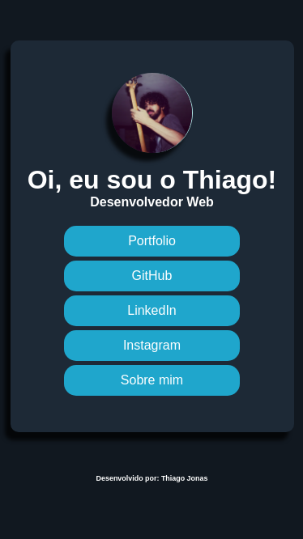
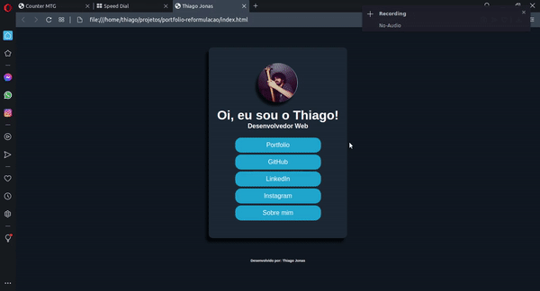

Trata-se de um card simples de apresentação que funciona como um organizador de links para diversas páginas e perfis, como redes sociais e portfólios.
O projeto é responsivo, tendo a possibilidade de ser visualizado de forma agradável tanto em desktops quanto em dispositivos móveis.
Os links mudam seu estado conforme o cursos do mouse passa por cima, permitindo identificar melhor qual elemento estará sendo clicado.
O projeto possui um conceito simples, como também é de fácil implementação, porém, bastante funcional.